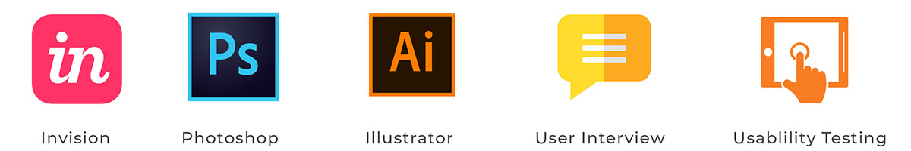

Blackfyre App - Product Design
Blackfyre is a platform that connects black businesses to black communities. The purpose of this is to foster interaction, exchange of goods and services between these communities to solve the problem of demand and supply.
The Problem
1. Many black people lack access to services they commonly relate to hence a lack of supply of services.
2. Black people do not have any awareness of black businesses within their location.
3. Encouraging a strong foundation of interaction for the black community.
My Role
I led the Product Design as a UI/UX consultant taking them from problem to prototype stage.
Design Toolkit

The Project
To comply with my non-disclosure agreement, I have omitted confidential information in this case study.
Main Tasks
- - Customers Research & Insights
- - Ideation
- - Prototype & Evaluation
Customer Research
I needed to understand the value proposition for the users of this application. The application was split into two user profiles which are the businesses who provide the services and the residents who live in their respective neigbourhoods. Some of the critical questions were:
- - How do businesses currently expose their brand and services.
- - What is the communication funnel between businesses and potential customers.
- - What are the channels avaialbale for networking between the black community.
Insights
There is a gap between businesses in the black community and the awareness of the networks that are available to access.
Ideation
I proceeded to design a userflow diagram to illustrate the concept. The main point of the flow is to ensure that the features of the app are visible so that we can evaluate the functionality and establish the foundation necessary to build out the prototype.
{kind=link}
User Interface
These screens outline the flow from a user's perspective